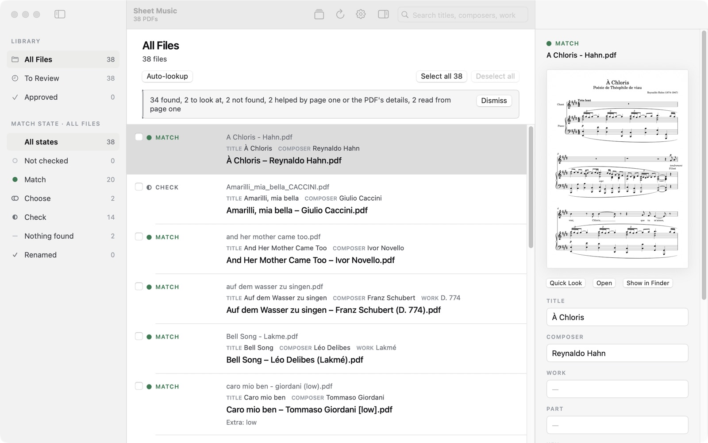
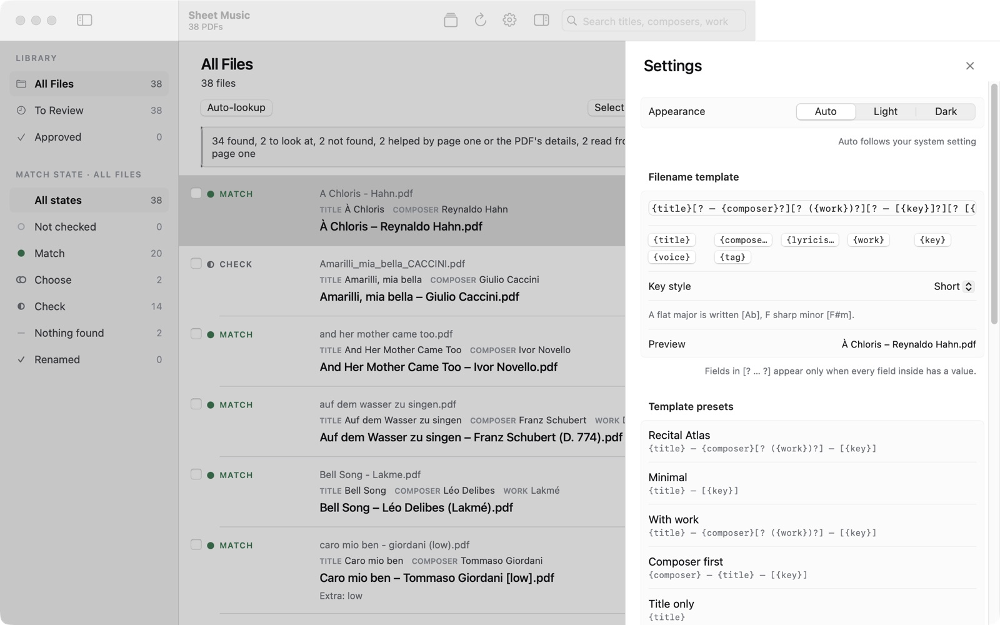

Score Sifter 2.0 for Mac
The guide
Everything the app does, in the order you’ll meet it.
- I.Getting started
- II.The window
- III.Auto-lookup and the four answers
- IV.Reviewing a file
- V.Approving and renaming
- VI.Undo
- VII.How files are named
- VIII.forScore
- IX.Settings
- X.Keyboard shortcuts
I. Getting started
What you need: a Mac with macOS 14 Sonoma or later, Apple silicon or Intel. Reading titles from page one with Apple Intelligence is optional, and needs macOS 26 on a Mac that has Apple Intelligence.
- Open the downloaded
ScoreSifterdisk image (the.dmgfile) and drag Score Sifter into Applications. - Open it from Applications. It is signed and checked by Apple, so it opens without a warning.
- Click Choose a folder… (or File ▸ Open Folder…, ⌘O), or drop a folder on the window. Score Sifter only ever sees the folders you choose, and remembers the last one for next time.
Score Sifter finds the PDFs in the folder (and its subfolders, unless you switch that off) and reads each filename. Nothing is changed.
Before renaming a large library for the first time, keep a copy of it. Score Sifter never deletes a file and every rename can be undone, but a backup is always wise.
II. The window
On the left, the sidebar sorts your files two ways:
- To Review, Approved and All Files: where each file is on its way to being renamed. Renamed lists the files Score Sifter has already renamed.
- Match state: what Score Sifter found for each file (section III). Click a state to see only those files.
In the middle, the list: each file’s current name, its state, and the name it would get. On the right, the inspector (⌃⌘I) shows the selected file’s page one, its fields and its proposed name. Press Space to see the whole PDF in Quick Look, and double-click a file to review it from there.

III. Auto-lookup and the four answers
Click Auto-lookup (⇧⌘L). Score Sifter checks every file against its catalogue of 54,180 pieces by 1,124 composers, built for singers: art song, opera and operetta, musical theatre, sacred music and folk song. The catalogue is inside the app. When a filename says nothing useful, it reads page one of the score.
With Apple Intelligence switched on (section IX), page one can also be read by Apple’s on-device model. What it reads is shown as a suggestion with Use this; nothing changes until you use it.
When the catalogue doesn’t know a piece, Score Sifter can ask MusicBrainz and Open Opus, sending only the title and composer. You can switch this off in Settings; those files then stay Nothing found. An answer found online is never a Match on its own: it is a Check, for you to look at.
Each file ends up in one of four states:
| State | What it means | What to do |
|---|---|---|
| Match | The catalogue knows this piece exactly. | Approve it. |
| Choose | More than one piece fits equally well: Schumann wrote two songs called Nachtlied. | Pick the right one. |
| Check | A likely answer that needs your eye: a near spelling, a title read from the page, a lookup online. | Look, then approve or correct it. |
| Nothing found | Score Sifter would rather leave a file alone than guess. | Fill in the fields yourself, or leave it as it is. |
A key is never taken from the catalogue: most singers’ copies aren’t in the original key, so the key in the new name is the one your filename gave.
IV. Reviewing a file
Select a file to see it in the inspector. You can change any field there (Title, Composer, Work, Part, Key, Tags) and the proposed name follows. Library ▸ Revert to Scanned Name undoes your edits, and Library ▸ Keep Current Name approves a name that is already right.
To go through the Choose and Check files one at a time, with page one beside each, use Library ▸ Review Choose and Check (⌥⌘R). In that view:
- pick a candidate for a Choose file, or fix a typo in the title and press ↩ to search the catalogue again;
- S skips a file for now, L leaves it alone, and N says nothing fits;
- F reports a catalogue error. The report is kept on your Mac;
- Esc goes back to the list. Your decisions so far are kept.
Your own notes stay. Anything in a filename Score Sifter doesn’t recognise (“IPA”, “low key”, “Ben’s version”) is kept in the new name, and the list shows it as Extra so you can keep it or take it out. A file with Extra text is never approved in bulk: you look at it first.

Look Up This File… (⌘L) asks again for one file, for example after you’ve corrected its title.
V. Approving and renaming
- Approve the files you’re happy with: tick them and click Approve (⌘D), or use Approve All Matches (⌥⌘D). Approved files move to Approved. Nothing is renamed yet.
- In Approved, click Rename Approved Files (⌘↩).
Score Sifter never renames over another file: if the name is taken, it adds “(2)”. Unless you switch it off, it also writes the title, composer, key and tags into each renamed PDF (section VIII). When it’s done, a summary shows what was renamed, what was skipped and why.
VI. Undo
- Straight after renaming, Edit ▸ Undo (⌘Z) puts the names back, or click Undo all renames in the summary.
- Later, even after quitting and reopening, use Library ▸ Undo Last Renames…. It asks first, then puts every file of the last batch back under its old name.
Undo restores the names. The details written inside a PDF were added to the end of the file, and everything that was there before is untouched.
VII. How files are named
The new name comes from a template you can change in Settings. The standard one gives names like:
Widmung – Robert Schumann (Myrthen, Op. 25, No. 1) – [F].pdf
The template uses these fields: {title}, {composer}, {lyricist}, {work}, {key}, {voice} and {tag}. Anything in [? … ?] appears only when every field inside it has a value, so a piece with no work doesn’t get empty brackets. Settings has ready-made presets (Recital Atlas, Minimal, With work, Composer first, Title only), and you can save your own.
Key style sets how keys are written:
| Style | A flat major | F sharp minor |
|---|---|---|
| Short | [Ab] | [F#m] |
| Spelled out | [Ab major] | [F# minor] |
| Classical (lower case is minor) | [Ab] | [f#] |
| With signs | [A♭] | [F♯m] |
Spelled out never adds a major or minor your filename didn’t state. Signs (♭ and ♯) in a filename can cause trouble with some cloud services.
VIII. forScore
Score Sifter writes the title, composer, key and tags into each renamed PDF, in the places forScore reads. Whatever the publisher already stored in the file is kept. A PDF that can’t be written safely (encrypted or damaged) is renamed and left as it was, and the summary says so.
- Rename your files with Score Sifter.
- Import them into forScore.
- Open a score’s details in forScore and use Fetch. forScore shows a tick box beside each field, so you choose what to take.
Other PDF readers that read a PDF’s title and author see the same details.
IX. Settings
Score Sifter ▸ Settings… (⌘,) opens a panel beside the list.
- Appearance: light, dark, or Auto (follows your Mac).
- Filename template, key style and template presets: section VII.
- Looking up online: Look up unknown pieces online, MusicBrainz and Open Opus, on by default. Off, nothing is sent anywhere.
- Scanning: Include subfolders, Skip already formatted files (files already named in your format), and Hide already formatted files from list.
- Reading the page: Read page one when nothing is found (Apple Intelligence), on Macs that have it. It runs on your Mac. What it reads is never a Match on its own: you confirm it.
- Renaming: Write metadata to PDF files (forScore compatible), on by default.

Updates: Score Sifter ▸ Check for Updates… looks for a new version. From the second time you open the app, it asks whether to check automatically once a day. An update is always offered first, never installed without asking.
X. Keyboard shortcuts
| ⌘O | Open Folder… |
| ⌘R | Rescan the folder |
| ⇧⌘L | Auto-lookup |
| ⌘. | Cancel Auto-lookup |
| ⌘L | Look Up This File… |
| ⌥⌘R | Review Choose and Check |
| ⌘T | Tick or untick this file |
| ⌥⌘A · ⇧⌥⌘A | Tick all shown · Untick all shown |
| ⌘D · ⇧⌘D | Approve · Unapprove |
| ⌥⌘D | Approve All Matches |
| ⌘↩ | Rename Approved Files |
| ⌥⌘↩ | Rename This File |
| ⌘1 · ⌘2 · ⌘3 | All Files · To Review · Approved |
| ⌥⌘0 to ⌥⌘5 | All states, then each match state |
| ⌘Y · Space | Quick Look |
| ⌘↓ | Open the PDF |
| ⇧⌘R | Show in Finder |
| ⌃⌘I | Show or hide the inspector |
| ⌘, | Settings |
Something wrong?
Write to hello@kairovo.com. Every message is read.